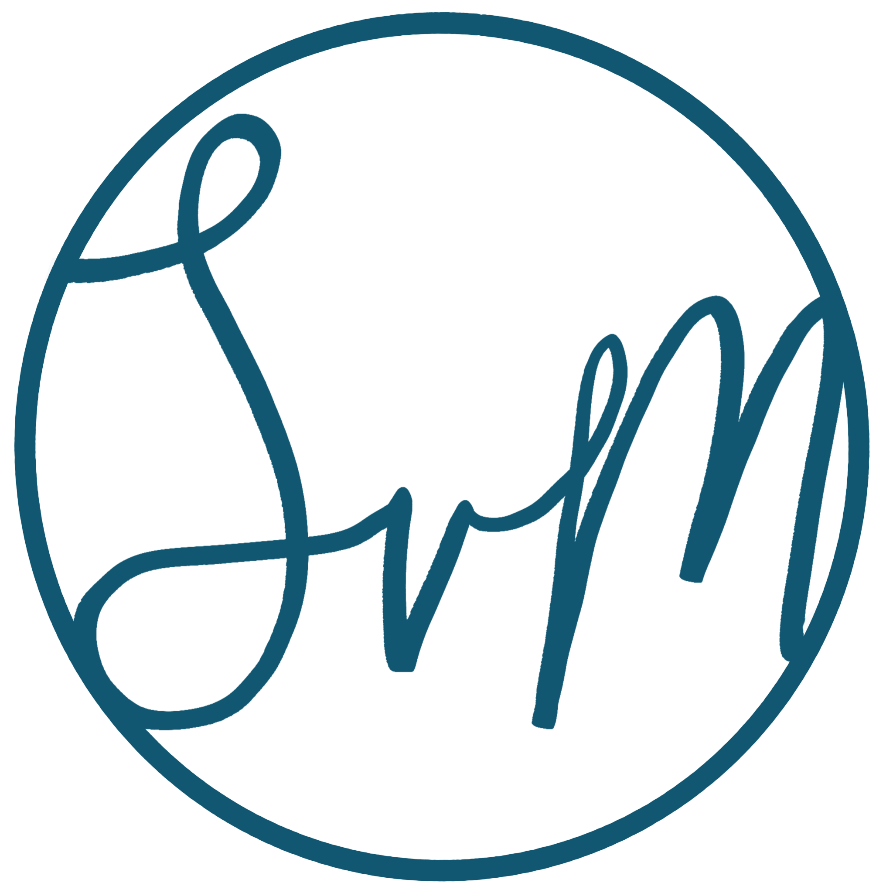

Bridging polymer science, industry
and communication.
Explore an evolving professional network inspired by a crosslinked polymer.
Hover, focus or tap a node to follow the connections.

Scroll to explore

Explore an evolving professional network inspired by a crosslinked polymer.
Hover, focus or tap a node to follow the connections.
Scroll to explore